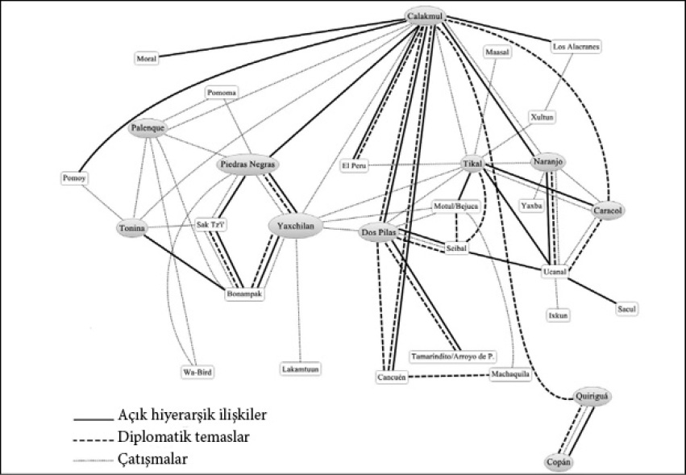

5

“Geleceği gördüm, işler yolunda”:
Sömürücü kurumlara dayalı büyüme
Geleceği gördüm
Kurumsal farklılıklar, ekonomik büyümenin açıklanmasında çağlar boyunca kritik bir rol üstlendiler. Peki, tarihteki çoğu toplum sömürücü siyasal ve ekonomik kurumlara dayanıyorsa bu büyümenin hiç olmadığı anlamına mı gelir? Elbette hayır. Sömürücü kurumlar, doğaları gereği, sömürülebilecek zenginlik üretmelidirler. Siyasal gücü tekelinde tutan bir hükümdar ve merkezileşmiş bir devletin kontrolünde bir dereceye kadar kanun ve düzen sağlanabilir, bir kurallar sistemi oturtulabilir ve ekonomik faaliyet canlandırılabilir.
Fakat sömürücü kurumlara dayalı büyüme, doğası gereği kapsayıcı kurumların meydana getirdiği büyümeden ayrılır. En önemlisi, teknolojik değişime ihtiyaç duyacak olan sürdürülebilir büyüme değildir, daha ziyade mevcut teknolojilere dayalı büyümedir. Sovyetler Birliği’nin izlediği ekonomik rota, devletin otoritesinin ve sağladığı teşviklerin sömürücü ekonomik kurumlar altında nasıl hızlı büyümeye önayak olduğunu ve bu tip büyümenin en nihayetinde nasıl sona erip çökeceğine canlı bir örnek oluşturur.
Birinci Dünya Savaşı sona erdiğinde galip ve mağlup kuvvetler barış koşullarını görüşmek için Paris yakınlarındaki muazzam Versailles Sarayı’nda bir araya geldiler. Aralarındaki en önemli şahsiyet Birleşik Devletler Başkanı Woodrow Wilson’dı. Dikkat çekici olansa Rusya’nın hiçbir temsilci göndermemesiydi. Eski çarist rejim Ekim 1917’de Bolşevikler tarafından yıkıldı. Ardından Kızıllar (Bolşevikler) ile Beyazlar arasında bir iç savaş alevlendi. İngilizler, Fransızlar ve Amerikalılar Bolşeviklere karşı savaşmak için bir görev gücü yolladılar. Genç diplomat William Bullitt’in liderliğindeki bir heyet ve deneyimli entelektüel ve gazeteci Lincoln Steffens, Lenin’le konuşup Bolşeviklerin niyetini ve onlarla nasıl anlaşmaya varılabileceğini anlamak için Moskova’ya gönderildi. Steffens bir put kırıcı ve bıkıp usanmadan Birleşik Devletler’deki kapitalizmin kötülüklerini ifşa ederek skandal haberciliği yapan bir gazeteci olarak isim yapmıştı. Devrim sırasında Rusya’da bulunmuştu. Moskova’ya gönderilmesinin nedeni, heyeti daha güvenilir kılmak ve hasmane göstermemekti. Heyet Lenin’den gelen ve yeni kurulmuş Sovyetler Birliği’yle barış yapmak için ne gerektiğini söyleyen bir teklifin ana hatlarıyla döndü. Sovyet rejiminin büyük potansiyelini gören Steffens’ın ağzı bir karış açık kalmıştı.
“Sovyet Rusya...” diyordu, 1931’deki otobiyografisinde, “evrimci bir planı olan devrimci bir devletti. Planları doğrudan eyleme geçerek yoksulluk, zenginlik, yolsuzluk, ayrıcalık, tiranlık ve savaş gibi musibetleri sona erdirmek değil nedenlerini bulup ortadan kaldırmaktı. Birkaç kuşak içinde önce ekonomik sonra siyasal bir demokrasiyle sonuçlanacak ekonomik kuvvetlerin bilimsel bir biçimde yeniden düzenlenmesini sağlamak için küçük, eğitimli bir azınlığın desteklediği bir diktatörlük kurdular.”
Steffens diplomatik görevinden döndüğünde eski arkadaşı heykeltıraş Jo Davidson’ı görmeye gitti ve onu zengin yatırımcı Bernard Baruch’un büstünü yaparken buldu. “Demek Rusya’daydın” dedi Baruch. Steffens, “Gelecekteydim ve işler yolundaydı” diye yanıtladı. Bu vecizeyi tarihe geçecek şekilde mükemmelleştirdi: “Geleceği gördüm, işler yolunda.”
1980’lere kadar çoğu Batılı Sovyetler’de hâlâ gelecek görüyor ve işlerin yolunda olduğuna inanmaya devam ediyordu. Bir bakıma öyleydi; ya da en azından bir süre öyle devam etti. Lenin 1924’te öldü ve Joseph Stalin 1927’ye kadar ülke üzerindeki kontrolünü pekiştirdi. Rakiplerini temizledi ve ülkeyi hızla sanayileştirecek bir hamle başlattı. Bunu 1921’de kurulan Devlet Planlama Komitesi-Gosplan’ı harekete geçirerek yaptı. Gosplan 1928 ile 1933 yılları arasında uygulanan ilk Beş Yıllık Planı hazırladı. Stalin tarzı ekonomik büyüme basitti; devlet eliyle sanayiyi geliştir, bunun için gerekli kaynakları da tarım vergisini son derece yüksek oranlara getirerek sağla. Komünist sistemin etkili bir vergi sistemi yoktu, Stalin de bunun yerine tarımı “kolektif” hale getirdi. Bu süreç toprağın özel mülkiyetinin kaldırılmasını gerektirdi ve kırsal kesimde yaşayan herkesi komünist devletin işlettiği devasa kolektif çiftliklerde topladı. Bu durum, Stalin için tarımsal ürüne el koyup elde edilen geliri yeni fabrikalar inşa eden ve bunlara personel olan insanları beslemek için kullanmayı çok daha kolay hale getirdi. Kırsal kesimdeki halk için sonuçlar felaketti. Kolektif çiftlikler insanların sıkı çalışmasını sağlayacak teşviklerden tamamen yoksundu, dolayısıyla üretim düzeyi çok hızlı bir biçimde düştü. Üretimin o kadar büyük bir kısmına el konuldu ki, yeterli yiyecek bulunamıyordu. İnsanlar açlıktan ölmeye başladı. Nihayetinde, zorunlu kolektifleştirme süresince muhtemelen 6 milyon insan kıtlık yüzünden öldü ve yüzbinlerce insan öldürüldü ya da Sibirya’ya sürüldü.
Ne yeni inşa edilmiş sanayi ne de kolektif hale getirilmiş çiftlikler ekonomik bakımdan yeterli olduğundan, Sovyetler Birliği’nin sahip olduğu her kaynaktan azami ölçüde yararlandılar. Kulağa ekonomik bir felaket ve durgunluk için hazırlanmış bir reçete gibi geliyor; tabii kesin bir çöküş için değilse. Fakat Sovyetler Birliği hızla büyüdü. Bunun nedenini anlamak zor değil. İnsanların piyasalar aracılığıyla kendi kararlarını vermelerine olanak tanımak bir toplum için kaynaklarını verimli bir biçimde kullanmanın en iyi yoludur. Bunun yerine, tüm bu kaynakları devlet ya da dar bir elit kontrol ederse ne doğru teşvikler sağlanır ne de insanların beceri ve yetenekleri etkili bir biçimde tahsis edilir. Fakat bazı durumlarda, Sovyetler Birliği’ndeki ağır sanayi gibi, bir sektörde ya da bir faaliyette emek ve sermaye verimliliği öylesine yüksek olur ki, sömürücü kurumların güdümündeki tepeden inme bir süreçle kaynakların o sektöre tahsis edilmesi bile büyüme getirmez. 3. bölümde gördüğümüz gibi Barbados, Küba, Haiti ve Jamaika gibi Karayip adalarındaki sömürücü kurumlar nispeten yüksek gelir düzeylerine ulaşabildiler çünkü kaynakları tüm dünyada talep gören şeker üretimine tahsis ettiler. Köle çetelerine dayalı şeker üretimi kesinlikle “etkili” değildi ve bu toplumlarda teknolojik değişim ya da yapıcı yıkım yoktu. Fakat bu onları sömürücü kurumlara dayalı belirli bir büyüme yakalamaktan alıkoymadı. Sovyetler Birliği’nde de durum aynıydı; Karayipler’de şekerin oynadığı rolü burada sanayi üstleniyordu. Sovyetler Birliği’ndeki sınai büyüme daha da kolaydı çünkü Avrupa ve Amerika’dakine kıyasla teknolojisi çok çağdışıydı, dolayısıyla kaynakları sanayi sektörüne yeniden yönlendirilerek büyük kazançlar sağlanabilirdi, her ne kadar bunların hepsi verimsiz bir biçimde ve zor kullanarak yapılsa da.
1928’den önce Rusların çoğu kırsal kesimde yaşıyordu. Köylülerin kullandığı teknoloji ilkeldi ve üretkenliğe yönelik çok az teşvik vardı. Aslına bakılırsa, Rus feodalizminin son kalıntıları Birinci Dünya Savaşı’ndan yalnızca kısa bir süre önce ortadan kaldırılmıştı. Dolayısıyla bu işgücünü tarımdan sanayiye kaydırarak ortaya çıkarılabilecek büyük bir ekonomik potansiyel vardı. Stalinist sanayileşme bu potansiyeli ortaya çıkarmanın acımasız bir yoluydu. Stalin gerektiği gibi kullanılamayan bu kaynakları devlet zoruyla daha verimli bir biçimde iş görecekleri sanayi sektörüne aktardı, her ne kadar sanayi de yetersiz bir biçimde örgütlenmiş olsa da. Gerçekten de 1928-1960 yılları arasında ulusal gelir yıllık yüzde 6 oranında arttı; bu muhtemelen o zamana kadarki en hızlı ekonomik büyüme hamlesiydi. Bu hızlı ekonomik büyüme teknolojik değişim sayesinde değil, işgücünün yeniden tahsisi ve yeni araçların üretilip fabrikaların inşa edilmesiyle ortaya çıkan sermaye birikimi sayesinde gerçekleşti.
Büyüme öylesine hızlıydı ki yalnızca Lincoln Steffens’ı değil Batılı birkaç kuşağı aldattı. Birleşik Devletler’in Merkezi İstihbarat Teşkilatı’nı da aldattı. Hatta 1956’da BM’de yaptığı ünlü bir konuşmada “sizi [Batı’yı] gömeceğiz” diyerek böbürlenen Nikita Kruşçev gibi, Sovyetler Birliği’nin kendi liderlerini bile aldattı. 1977 gibi geç bir tarihte bile bir İngiliz iktisatçı, önemli bir akademik ders kitabında tam istihdam ve fiyat istikrarı bakımından, hatta fedakâr bireylerin yetiştirilmesi bakımından Sovyet tarzı ekonomilerin kapitalist ekonomilerden üstün olduğunu savunuyordu. Zavallı yaşlı kapitalizm yalnızca siyasal özgürlük sağlama konusunda daha iyiydi. Gerçekten de, Nobel ödüllü Paul Samuelson yazdığı iktisat ders kitabında tekrar tekrar Sovyetler Birliği’nin yaklaşan ekonomik hâkimiyetinden söz ediyordu. 1961 baskısında Samuelson bir ihtimal 1984’e, fakat büyük ihtimalle 1997’ye kadar Sovyet ulusal gelirinin Birleşik Devletler’inkini geçeceğini öngörüyordu. 1980 baskısında bu analizin şansı çok azalmıştı, dolayısıyla tarihler 2002 ve 2012’ye ertelendi.
Stalin ve sonraki Sovyet liderlerinin izledikleri politikalar hızlı bir büyüme sağlasa da bunu süreklilik gösterecek şekilde yapmayı başaramadılar. 1970’lere gelindiğinde ekonomik büyüme adeta durdu. Bundan çıkan en önemli ders şudur: Sömürücü kurumlar iki nedenden ötürü sürdürülebilir teknolojik değişim üretemezler; ekonomik teşviklerin yokluğu ve yaratıcı yıkımın siyasal sonuçlarından korkulması. Buna ek olarak, gayet verimsiz bir biçimde kullanılan tüm kaynaklar sanayiye aktarıldığında geriye devlet zoruyla elde edilebilecek çok az bir kazanç kalacaktır. Böylece yenilikten yoksun, ekonomik teşvikleri zayıf Sovyet sistemi bir bariyere tosladı ve daha fazla ilerleyemedi. Sovyetlerin çok büyük gayretler sonucunda yenilik getirmeyi sürdürebildikleri tek alan askeri teknolojiler, havacılık ve uzay teknolojileriydi. Bunun sonucunda uzaya ilk köpeği, Leika’yı ve ilk insanı, Yuri Gagarin’i göndermeyi başardılar. Dünyaya bıraktıkları miraslarından biri de AK-47’ydi.
Gosplan, sözde Sovyet ekonomisinin planlanmasından sorumlu mutlak güce sahip planlama dairesiydi. Gosplan’ın hazırlayıp yönettiği beş yıllık kalkınma planlarının faydalarından biri de güya akılcı yatırım ve yeniliğin gerektirdiği uzun vadeli bir planlama olmasıydı. Oysa Sovyet sanayiinde uygulananların sık sık gözden geçirilip yeniden yazılan, hatta görmezden gelinen beş yıllık planlarla çok az ilgisi vardı. Sanayinin gelişimi, sıklıkla fikir değiştiren ve önceki kararlarını çoğu kez tamamen yenileyen Stalin ve Politbüro’nun buyrukları doğrultusunda gerçekleşiyordu. Tüm planlar “taslak” ya da “ön hazırlık” başlığı altında sınıflandırılıyordu. Yalnızca bir planın kopyası “nihai” başlığı altında sınıflandırılabildi; o da hafif sanayi için 1939’da hazırlanmıştı. Bizzat Stalin 1939’da “Yalnızca bürokratlar planlama çalışmasının planın hazırlanmasıyla bittiğini düşünür. Planın hazırlanması yalnızca başlangıçtır. Planın gerçek doğrultusu ancak plan ortaya çıkarıldıktan sonra şekillenir” demişti. Stalin siyasal sadakat gösteren kişi ve grupları ödüllendirip, göstermeyenleri cezalandırmadaki takdir gücünü en üst düzeye çıkarmak istiyordu. Gosplan’ın esas rolü ise, dost ve düşmanlarını izlemek için Stalin’e enformasyon sağlamaktı. Aslında Gosplan karar almaktan kaçınıyordu. Çünkü kötü netice veren bir karar alırsanız, vurulabilirdiniz. En iyisi mümkün mertebe sorumluluktan uzak durmaktı.
1937 Sovyet nüfus sayımı, Komünist Parti’nin ne istediğini kestirmeye çalışmak yerine işinizi gerektiğinden fazla ciddiye alırsanız başınıza neler gelebileceğine iyi bir örnektir. Gelen rakamlar, sonuçların 162 milyonluk bir nüfusa işaret ettiğini, dolayısıyla Stalin’in 180 milyonluk tahmininden çok daha az, hatta 1934’te bizzat duyurduğu 168 milyondan bile az olduğunu gösterdi. 1937 sayımı 1926’dan beri gerçekleştirilen ilk sayımdı. Dolayısıyla 1930’ların başında meydana gelen büyük kıtlıklardan ve kitlesel temizlikten sonraki ilk sayımdı. Sonuçlar gerçek rakamları yansıtıyordu. Stalin’in tepkisiyse sayımı gerçekleştirenleri tutuklatıp Sibirya’ya göndermek ya da vurdurmak oldu. Yeni bir nüfus sayımı için emir verdi ve bu da 1939’da gerçekleştirildi. Bu kez sayımı gerçekleştirenler meseleyi doğru anladılar ve nüfusun aslında 171 milyon kişi olduğunu buldular.
Stalin, Sovyet ekonomisinde insanların sıkı çalışmak için teşviklerinin olmadığını anladı. Bu durum karşısında verilebilecek en doğal tepkilerden biri bazı teşvikler yaratmaktı ve bazı durumlarda bunu gerçekleştirdiği de oldu; örneğin, verimliliğin düştüğü bölgelere yiyecek yardımı yapıldı. Üstelik, daha 1931 başlarında mali teşvikler olmaksızın çalışacak “sosyalist kadınlar ve erkekler yaratmak” idealinden vazgeçti. Meşhur bir konuşmasında “eşitlik çığırtkanlığını” eleştirdi ve sonrasında yalnızca farklı işlere farklı maaşlar ödenmekle kalınmadı, aynı zamanda bir ikramiye sistemi de hayata geçirildi. Bu sistemin nasıl çalıştığını anlamak yol gösterici olacaktır. Genellikle, merkezi planlama doğrultusunda hareket eden bir şirket, planın öngördüğü bir üretim miktarını karşılamak zorundaydı; her ne kadar bu planlar çoğu zaman yeniden gözden geçirilip değiştirilse de. 1930’lardan itibaren üretim hedefine ulaşıldığı takdirde işçilere ikramiye verilmeye başlandı. Bu ikramiyeler epeyce –mesela, yönetici ya da kıdemli mühendislerin aldığı ücretin yüzde 37’si kadar– yüksek olabiliyordu. Fakat bu tür ikramiyelerin verilmesi teknolojik değişim için her türlü caydırıcı etkene yol açabiliyordu. Öncelikle, kaynakları mevcut üretimden uzaklaştıran yenilik, üretim hedeflerine ulaşılmasını ve ikramiyelerin ödenmesini tehlikeye soktu. Ayrıca, üretim hedefleri genellikle önceki üretim seviyelerini esas alıyordu. Bu da üretimin asla artırılmaması için büyük bir teşvik yarattı, çünkü üretimin artırılması yalnızca gelecekte daha fazla üretmeye mecbur kalmak demekti ve böylece gelecekteki hedefler sürekli artacaktı. Düşük başarı, hedeflere ulaşıp ikramiyeye kavuşmanın daima en iyi yoluydu. Ayrıca ikramiyelerin aylık olarak ödenmesi herkesin şimdiye odaklanmasına yol açıyordu. Oysa yenilik, yarın daha fazlasına sahip olabilmek için bugün fedakârlık etmek demekti.
İkramiyeler ve teşvikler davranış biçimini değiştirmede etkili olsa bile çoğu zaman başka sorunlar doğurur. Merkezi planlama büyük 18. yüzyıl iktisatçısı Adam Smith’in piyasanın “görünmez eli” dediği şeyi değiştirebilecek kadar marifetli değildi. Çelik levhalar ton cinsinden hesaplanarak üretildiğinde aşırı ağır oluyordu. Yüzey dikkate alınarak hesaplandığında da bu kez aşırı ince oluyordu. Avizeler ton cinsinden hesaplanarak üretildiğinde öyle ağır oluyordu ki, tavana zor asılıyordu.
1940’lara gelindiğinde Batı’daki hayranları olmasa da Sovyetler Birliği liderleri bu ters teşviklerin gayet farkındaydılar. Sovyet liderler bunlar üstesinden gelinebilecek teknik sorunlardan kaynaklanıyormuş gibi davrandılar. Örneğin, şirketlerin ikramiye ödeyerek elde ettikleri kâr paylarını bir tarafa bırakmaları için üretim hedeflerine dayalı ikramiyeyi kaldırdılar. Fakat artık “kâr güdüsü” yeniliği üretim hedeflerine dayalı mevcut sistemden daha fazla teşvik etmiyordu. Kâr hesaplamada kullanılan fiyat sistemi son yeniliklerin ve teknolojilerin değerinden neredeyse tümüyle bağımsızdı. Bir piyasa ekonomisindeki fiyatların aksine, Sovyetler Birliğindeki fiyatlar devlet tarafından ayarlanıyor ve böylece değerle çok az ilişkisi oluyordu. Sovyetler Birliği yeniliğe yönelik daha etkili teşvikler yaratmak için 1946’da kayda değer ikramiyeler vermeye başladı. Daha 1918’de yenilikçinin para ödülü alması prensibi kabul görmüştü fakat verilen ödüller çok azdı ve yeni teknolojinin değeriyle ilgisi yoktu. Bu durum ikramiyenin yeniliğin sağladığı verimlilikle orantılı olması gerektiğinin kabul edilmesiyle ancak 1956’da değişebildi. Ne var ki, verimlilik mevcut fiyat sistemiyle ölçülen ekonomik yarara göre hesaplandığından bu da yenilik için pek bir teşvik anlamına gelmiyordu. Bu planların ürettiği ters teşviklere sayfalar dolusu örnek verilebilir. Örneğin, yenilik ikramiyesi fonunun büyüklüğünün bir şirketin maaş giderleriyle sınırlı olması, işgücünden tasarruf edilmesini sağlayacak herhangi bir yeniliğin üretilmesine ya da uygulanmasına yönelik teşviki derhal azaltıyordu.
Farklı prensiplere ve ikramiye sistemlerine odaklanmak sistemin doğasında var olan sorunların görülmesini engelleyebilir. Siyasal otorite ve güç Komünist Parti’nin elinde olduğundan insanların karşılaştığı temel teşvikleri kökten değiştirmek imkânsızdı; ikramiye olsun ya da olmasın. Komünist Parti kurulduğu günden itibaren istediğini elde etmek için yalnızca havuç değil sopa da kullanmıştı, hem de büyük sopalar. Ekonomik verimlilik için de durum çok farklı değildi. Eksiksiz bir yasa sistemiyle, işten kaytardığı fark edilen işçilere cezai müeyyideler getirilmişti. Örneğin, Haziran 1940’da çıkarılan bir yasa izin alınmadan 20 dakika için bile işte olmamayı, hatta işte olup avarelik etmeyi işe devamsızlık olarak tanımlıyor ve bunu da altı ay ağır iş ve ücrette yüzde 25 kesintiyle cezalandırılabilecek bir suç sayıyordu. Buna benzer bin bir çeşit müeyyide getirildi ve şaşırtıcı bir sıklıkla uygulamaya koyuldu. 1940 ile 1955 arasında 36 milyon insan, yetişkin nüfusun yaklaşık üçte biri, bu tür suçlardan suçlu bulundu. Bunların 15 milyonu hapse atıldı ve 250 bini vuruldu. Her yıl 1 milyon yetişkin iş ihlali nedeniyle hapse atılıyordu. Stalin’in Sibirya’daki kamplara sürgüne gönderdiği 2,5 milyon insan da cabası. Yine de işe yaramıyordu. Birini fabrikaya gönderebilirsiniz fakat vurmakla tehdit ederek insanları iyi fikirler düşünüp bulmaya zorlayamazsınız. Bu tür bir zorlama Barbados ya da Jamaika’da yüksek şeker üretimi sağlayabilir fakat modern sanayi ekonomisinde teşvik eksikliğini telafi edemez.
Merkezi planlamaya dayalı ekonomide gerçekten etkili teşviklerin sağlanamaması ikramiye sisteminin tasarımındaki teknik hatalardan kaynaklanmıyordu. Sömürücü büyüme sağlayan yöntemin bütününe ilişkin yapısal bir sorundu. Bazı temel ekonomik problemler devlet güdümüyle çözülebilirdi. Fakat sürekli ekonomik büyümeyi harekete geçirmek bireylerin yetenek ve fikirlerini kullanmalarını gerektiriyordu ve bu da Sovyet tarzı bir ekonomik sistemde asla gerçekleştirilemezdi. Sovyetler Birliği’nin idarecileri sömürücü ekonomik kurumları terk etmek zorunda kalırlardı fakat böyle bir hareket siyasal güçlerini tehlikeye sokardı. Gerçekten de, Mikhail Gorbaçov 1987’den sonra sömürücü ekonomik kurumlardan uzaklaşmaya başladığında Komünist Parti’nin ve onunla birlikte Sovyetler Birliği’nin gücü de un ufak oldu.
Sovyetler Birliği sömürücü kurumlara rağmen hızlı büyüme gerçekleştirmeyi başardı çünkü Bolşevikler güçlü bir merkezi devlet inşa ettiler ve bu merkezi devleti, kaynakları sanayiye tahsis etmede kullandılar. Ancak sömürücü kurumlara dayalı büyümenin tüm örneklerinde olduğu gibi, bu deneyim teknolojik değişim içermiyordu ve sürdürülebilir değildi. Büyüme önce yavaşladı, sonra tamamen durdu. Kısa ömürlü olmasına karşın, bu tip büyüme yine de sömürücü kurumların ekonomik faaliyeti nasıl canlandırdığını ortaya koymaktadır.
Tarih boyunca çoğu toplum sömürücü kurumlarla yönetilmiştir ve ülkeleri üzerinde belli ölçüde hâkimiyet kurmayı başaranlar –bu sömürücü toplumların hiçbiri sürdürülebilir bir büyümeye ulaşmayı başaramasalar bile– sınırlı bir büyüme yakalayabilmişlerdir. Aslına bakılırsa, tarihteki bazı dönüm noktaları sömürücü kurumları pekiştiren ve bir grubun otoritesini artırarak yasa ve düzen getirmesini, böylece sömürüden faydalanmasını sağlayan kurumsal yeniliklerle karakterize edilir. Bu bölümün geri kalanında öncelikle belirli ölçüde bir devlet merkeziyeti getiren ve sömürücü kurumlara dayalı büyüme sağlayan kurumsal yeniliklerin doğasını tartışacağız. Ardından bu fikirlerin günümüz uygarlığının pek çok veçhesine temel oluşturan Neolitik Devrim’i, tarihte çığır açan tarıma geçişi anlamamıza nasıl yardımcı olduğunu göstereceğiz. Daha sonra Maya şehir devletleri örneğiyle sömürücü ekonomik kurumlara dayalı büyümenin yalnızca teknolojik ilerlemenin olmayışı nedeniyle değil, aynı zamanda devletin ve sömürü yoluyla elde ettiklerinin kontrolünü ele geçirmek isteyen rakip gruplar arasındaki iç çatışmaları teşvik edeceği için de sınırlı olduğunu göstereceğiz.
Kasai Nehri’nin kıyısında
Kongo Nehri’nin en büyük kollarından biri de Kasai’dir. Angola’da doğup kuzeye yönelir ve modern Demokratik Kongo Cumhuriyeti’nin başkenti Kinshasa’nın kuzeydoğusunda Kongo Nehri’yle birleşir. Demokratik Kongo Cumhuriyeti dünyanın geri kalanına kıyasla fakir olsa da Kongo’da çeşitli grupların refah düzeyleri arasında daima dikkate değer farklılıklar olagelmiştir. Kasai Nehri bunlardan ikisi arasında bir sınır oluşturur. Kongo Nehri üzerinden batı kıyısına çıkar çıkmaz Lele halkıyla karşılaşırsınız; doğu kıyısındakiler ise Bushong halkıdır (Harita 6). Dış görünüş itibarıyla bu iki grubun refah düzeyleri arasında çok az farklılık olması beklenir. Onları ayıran, kayıkla dahi geçilebilecek bir nehirdir yalnızca. İki farklı kabile ortak bir kökene ve akraba dillere sahiptir. Buna ek olarak evleri, giysileri ve elişleri dahil inşa ettikleri şeylerin büyük kısmı tarz olarak birbirine benzer.
Yine de, 1950’lerde antropolog Mary Douglas ve tarihçi Jan Vansina bu grupları incelediklerinde aralarında bazı çok şaşırtıcı farklılıklar olduğunu keşfettiler. Douglas şöyle ifade ediyordu: “Lele halkının fakir olmasına karşın Bushong halkı zengindi... Bushong insanları Lele insanlarının sahip olduğu her şeyden daha fazlasına sahipti ve Lele insanlarının yapabildiği her şeyi daha iyi yapıyorlardı.” Bu eşitsizliğe basit açıklamalar getirilebilir. Örneğin Peru’da Potosí mita’sına tabi olan bölgeler ile olmayan bölgeler arasındakine benzer bir fark, Lele’nin geçimlik bir üretim yapmasına karşın Bushong’un pazarda mübadele için üretim yapmasıdır. Douglas ve Vansina ayrıca Lele’nin daha düşük bir teknoloji kullandığını da belirtiyorlar. Örneğin, verimliliği büyük ölçüde artırsa da avlanmak için ağ kullanmıyorlar. Douglas, “Ağın olmayışı Lele’nin uzun vadeli donanımlara zaman ve işgücü yatırımı yapmama yönündeki genel eğilimiyle örtüşüyor” diyor.
Ayrıca tarım teknolojilerinde ve örgütlenmede de önemli farklılıklar vardı. Bushong halkı iki yıllık dönemler halinde beş tahılı sırayla ekerek karma tarımın karmaşık bir biçimini uyguluyordu. Hint yer elması, tatlı patates, manyok ve fasulye yetiştiriyor, yılda iki bazen üç mısır hasadı yapıyordu. Lele’nin böyle bir sistemi yoktu ve yılda sadece bir kez mısır hasadı yapılabiliyordu.
Ayrıca yasa ve düzende de çarpıcı farklılıklar vardı. Lele sürekli çatışma halindeki müstahkem köylere ayrılmıştı. İki köy arasında yolculuk edenlerin, hatta yiyecek toplamak için ormana gitmeyi göze alanların saldırıya uğrama ya da kaçırılma ihtimali yüksekti. Bushong topraklarında buna benzer şeyler olmaz, olursa da nadiren olurdu.
Üretim kalıplarındaki, tarım teknolojilerindeki ve düzenin sağlanmasındaki bu farklılıkların arkasında ne yatıyordu? Belli ki, Lele’nin daha geri avcılık ve tarım teknolojileri kullanmasının nedeni coğrafyası değildi. Kuşkusuz cehalet de değildi, çünkü Bushong’da kullanılan aletler hakkında bilgi sahibiydiler. Alternatif bir açıklama kültür olabilirdi; acaba Lele’nin avcılıkta kullanılan ağlara ve daha sağlam, daha iyi inşa edilmiş evlere yatırım yapmaları için onları özendirmeyen bir kültürü olabilir mi? Ne var ki bu da doğru görünmüyor. Kongo halkı gibi Lele de silah satın almakla son derece ilgiliydi, hatta Douglas bu konuya şöyle dikkat çekiyordu: “Ateşli silahlar satın almaya olan düşkünlükleri [...] kültürlerinin uzun vadeli işbirliği ve çaba gerektirmedikleri sürece onlara daha ileri teknikler konusunda bir sınırlama getirmediğini gösteriyor.” Demek ki ne teknolojiye duyulan kültürel isteksizlik, ne cehalet, ne de coğrafya, Bushong’un Lele’ye kıyasla daha yüksek bir refah düzeyine sahip olmasını açıklayabiliyor.
Bu iki halk arasındaki farklılıkların nedeni Bushong ve Lele’de ortaya çıkan farklı siyasal kurumlarda yatmaktadır. Lele halkının birleşik bir siyasal yapının birer parçası olmayan müstahkem köylerde yaşadığını daha önce belirtmiştik. Kasai’nin diğer tarafında durum farklıydı. 1620 civarında Shyaam adlı bir adamın önderliğinde siyasal bir devrim gerçekleşti. Shyaam, Harita 6’da gördüğümüz, merkezinde Bushong’un bulunduğu, kendisinin de kral olduğu Kuba Krallığı’nı inşa etti. Bu dönemin öncesinde Bushong ve Lele arasında muhtemelen çok az fark vardı. Farklılıklar Shyaam’ın nehrin doğusundaki toplumu yeniden örgütleyiş biçiminin bir sonucu olarak ortaya çıktı. Bir devlet ve bir siyasal kurumlar piramidi inşa etti. Bunlar yalnızca öncekinden önemli ölçüde daha merkezi olmakla kalmıyordu, aynı zamanda çok da iyi yapılandırılmışlardı. Shyaam ve halefleri vergi toplamak için bir bürokrasi, adaleti sağlamak için de bir hukuk sistemi ve polis kuvveti oluşturdu. Liderler karar almadan önce meclislere danışıyor ve bu meclisler tarafından denetleniyordu. Avrupa sömürgeciliği öncesinde Sahra-altı Afrika için kayda değer ölçüde özgün bir hadise olan jüri yargılaması bile vardı. Her şeye rağmen, Shyaam’ın kurduğu merkezi devlet bir sömürü aracıydı ve son derece mutlakıyetçiydi. Kimse ona oy vermemişti ve devlet politikası halkın katılımıyla değil yukarıdan dikte edilerek belirleniyordu.
Kuba’ya merkezi devlet ve asayiş getiren bu siyasal devrim bir ekonomik devrime yol açtı. Tarım yeniden örgütlendi ve verimliliği artırmak için yeni teknolojiler kullanıldı. Temel besin maddelerinden oluşan tahılların yerini Amerika’dan gelen yeni ve daha yüksek randımanlı olanlar (özellikle mısır, manyok ve kırmızıbiber) aldı. Yoğun karma tarım döngüsü bu dönemde hayata geçirildi ve kişi başına üretilen yiyecek miktarı iki katına çıktı. Bu tahılları kullanmak ve tarım döngüsünü yeniden örgütlemek için tarlalarda daha fazla insana ihtiyaç duyuldu. Böylece evlenme yaşı 20’ye düştü, bu da erkekleri daha genç yaşta tarımsal işgücüne dahil etti. Lele ile aralarındaki tezat son derece açıktır. Lele erkekleri 35’inde evlenme eğilimindeydi ve ancak o zaman tarlalarda çalışıyorlardı. Daha öncesinde hayatlarını savaşa ve yağmaya adıyorlardı.
Siyasal ve ekonomik devrim arasındaki bağlantı basitti. Kral Shyaam ve onu destekleyenler tükettiklerinden daha fazlasını üretmek zorunda olan Kuba’dan vergi almak ve zenginliklerini sömürmek istediler. Shyaam ve adamları Kasai’nin doğu kıyısına kapsayıcı kurumlar getirmeseler de belirli ölçüde devlet merkeziyetçiliğine ulaşıp kanun ve düzeni sağlayan sömürücü kurumlar doğaları gereği bir miktar ekonomik refaha da yol açarlar. Ekonomik faaliyeti teşvik etmek elbette Shyaam ve adamlarının çıkarınaydı, başka türlü sömürülecek hiçbir şey olmazdı. Tıpkı Stalin gibi Shyaam da bu sistemi ayakta tutmak için gerekli zenginliği üretecek bir dizi kurumun oluşturulmasına kumanda etti. Bu da Kasai’inin diğer kıyısına hâkim olan yasa ve düzen yokluğuna kıyasla kayda değer bir ekonomik refah oluşturdu; muhtemelen büyük kısmı Shyaam ve elitleri tarafından sömürülecek olsa bile. Fakat bu ekonomik refah ister istemez sınırlıydı. Sovyetler Birliği’nde olduğu gibi Kuba Krallığı’nda da yaratıcı yıkım ve başlangıçtaki değişimi izleyen teknolojik yenilikler yoktu. Bu durum krallık 19. yüzyıl sonlarında ilk kez Belçikalı sömürge yetkilileriyle karşılaşıncaya dek hemen hemen hiç değişmedi.
Kral Shyaam’ın başarısı sömürücü kurumlar vasıtasıyla sınırlı ölçüde bir ekonomik başarıya nasıl ulaşılabileceğini gösteriyor. Bu tür bir büyüme yaratmak merkezileşmiş bir devlet gerektirir. Devleti merkezileştirmek için de çoğu zaman bir siyasal devrim gereklidir. Shyaam bu devleti kurar kurmaz gücünü ekonomiyi yeniden örgütlemek için kullandı, tarımsal verimliliği artırdı ve böylelikle onu vergilendirebildi.
Neden Bushong’da bir siyasal devrim oldu da Lele’de olmadı? Lele’nin de kendi Kral Shyaam’ı olamaz mıydı? Shyaam’ın başarısı coğrafya, kültür ya da cehaletle hiçbir deterministik bağı olmayan kurumsal bir yenilikti. Lele de böyle bir devrim yapabilir ve benzer bir biçimde kurumlarını dönüştürebilirlerdi, ama bunu yapmadılar. Bu belki de toplumları hakkında bugünkü sınırlı bilgimiz nedeniyle anlayamadığımız nedenlerden ötürü böyledir. Yüksek ihtimalle tarihin olumsal doğası nedeniyledir. Sıradaki bölümde ele alacağımız gibi, muhtemelen aynı olumsallık 12 bin yıl önce Ortadoğu’daki bazı toplumlar önce yerleşik hayata geçilmesine ardından bitki ve hayvanların evcilleştirilmesine yol açan daha da radikal bir kurumsal yenilikler dizisine girişirken de iş başındaydı.
Uzun yaz
Yaklaşık olarak MÖ 15.000’de dünyanın iklim sıcaklığının artmasıyla Buzul Çağı sona erdi. Grönland’daki buzul örneklerinden elde edilen kanıtlar kısa bir süre içinde ortalama sıcaklığın 15 derece kadar arttığını gösteriyor. Küresel ısınma hayvan popülasyonunun artmasına ve yabani bitki ve hayvan türlerinin çok daha elverişli hale gelmesine yol açtığı için bu ısınmaya insan nüfusundaki hızlı artış eşlik etmiş gibi görünüyor. Bu süreç, Genç Buzul Çağı olarak tanımlanmış bir soğuma evresiyle yaklaşık olarak MÖ 14.000’de hızla tersine dönmeye başladı. Ancak MÖ 9.600’den sonra 10 yıldan az bir sürede 7 derecelik bir artışla küresel sıcaklıklar yeniden yükseldi ve o tarihten itibaren de yüksek kaldı. Arkeolog Brian Fagan bu dönemi Uzun Yaz olarak adlandırıyor. İklimin ısınması, insan toplumlarının yerleşik hayata, tarıma ve hayvancılığa geçtikleri Neolitik Devrim’e temel oluşturan çok büyük bir kritik dönemeçti. Hem bu dönem hem de insanlık tarihinin sonraki aşamaları bu Uzun Yaz sıcağının keyfini sürdü.
Tarım ve hayvancılık ile avcılık-toplayıcılık arasında temel bir fark vardır. Tarım ve hayvancılık, bitki ve hayvan türlerini insanlar için daha kullanışlı hale getirmek için hayat döngülerine aktif bir biçimde müdahale edip genetik özelliklerini değiştirerek evcilleştirmeye dayanır. Evcilleştirme, uygun bitki ve hayvanlardan çok daha fazla yiyecek elde edilmesine olanak sağlayan teknolojik bir değişimdir. Mısırın evcilleştirilmesi, örneğin, insanların mısırın atası olan teosint adında yabani bir tahıl türünü toplamasıyla başlar. Teosint koçanları çok küçüktür, boyu yalnızca birkaç santimetre gelir. Modern mısırın koçanının yanında cüce kalır. Fakat zamanla insanlar büyük teosint başaklarını ve hasat edebilmek için bu bitkilerin başakları kırılmayıp gövdede kalanlarını seçerek aynı araziden çok daha fazla yiyecek elde etmelerini sağlayan bir tahılı, modern mısırı yarattılar.
Tarım ve hayvancılığa ve bitki ve hayvan evcilleştirmeye ilişkin en erken bulgular Ortadoğu’dan, özellikle de Hilly Flanks olarak bilinen, modern İsrail’in güneyinden başlayıp Filistin ve Ürdün Nehri’nin batı kıyısından, Suriye üzerinden Türkiye’nin güneydoğusuna, Kuzey Irak’a ve Batı İran’a uzanan bölgeden gelir. Yaklaşık MÖ 9.500’de, modern Filistin’de ve Ürdün Nehri’nin batı kıyısındaki Eriha’da ilk evcil bitkiler olan emmer ve iki sıralı arpa; Suriye’nin daha kuzeyindeki Tell Aswad’da da emmer, bezelye ve mercimek bulundu. Her ikisi de Natufian Kültürü’ne ait yerleşim yerleriydi ve her ikisi de büyük köyler barındırıyordu. O tarihte Eriha köyünün muhtemelen 500 kişilik bir nüfusu vardı.
İlk tarım köyleri niçin burada ortaya çıktı da başka bir yerde çıkmadı? Bezelye ve mercimeği evcilleştirenler niçin başka kabileler değil de Natufianlar’dı? Yalnızca şanslı mıydılar; tesadüfen evcilleştirmek için pek çok potansiyel adayın olduğu bir yerde mi yaşıyorlardı? Bu doğru olmasına doğruydu fakat bu türlerin arasında yaşayan başka pek çok halk vardı ve hiçbiri bunları evcilleştirmedi. 2. bölümde Harita 4 ve 5’te gördüğümüz gibi, genetikçilerin ve arkeologların modern evcil bitkilerin yabani atalarının dağılımını saptamak için yaptığı araştırma, bunların çoğunun milyonlarca kilometrekarelik çok geniş bir alana yayıldıklarını ortaya koyuyor. Evcilleştirilmiş hayvan türlerinin yabani ataları Avrasya’ya yayılmıştı. Her ne kadar Hilly Flanks yabani tahıl türleri bakımından bilhassa zengin olsa da onlar bile az rastlanır olmaktan çok uzaktırlar. Natufianları özel kılan sıra dışı ölçüde yabani türlerle dolu bir bölgede yaşamaları değildi. Bitki ve hayvan türlerini evcilleştirmeye başlamadan önce yerleşik hayata geçmiş olmalarıydı. Bunun kanıtlarından biri, katmanlar halinde büyüyen kemiksi yapıda bağlayıcı/birleştirici bir doku olan sementten oluşan ceylan dişleriydi. Sementin en hızlı büyüdüğü ilkbahar ve yaz süresince katmanlar kışın oluşan katmanlardan farklı bir renktedir. Ceylanın dişinden bir kesit alırsanız ölmeden oluşan son katmanın rengini görebilirsiniz. Bu tekniği kullanarak ceylanın yazın mı yoksa kışın mı öldürüldüğünü anlayabilirsiniz. Natufianlara ait yerleşim yerlerinde ceylanların her mevsimde öldürüldüğü görülebilir ve bu da yıl boyunca yerleşik olduklarını gösterir. Fırat Nehri üzerindeki Abu Hureyra köyü en yoğun araştırma yapılan Natufian yerleşimlerinden biridir. Neredeyse 40 yıldır köyün katmanlarını inceleyen arkeologlar tarıma geçişten önceki ve sonraki yerleşik hayata ilişkin belgelenmiş örneklerin en iyilerinden birine ulaştılar. Yerleşim muhtemelen yaklaşık MÖ 9.500 civarında başlamıştı ve yerleşimciler tarıma geçmeden önce avcı-toplayıcı hayat tarzlarını bir 500 yıl daha sürdürmüşlerdi. Arkeologlar köyün tarımdan önceki nüfusunun 100 ila 300 kişi arasında olduğunu tahmin ediyor.
Bir toplumun yerleşik hayata geçmeyi avantajlı bulmasına pek çok neden gösterebilirsiniz. Hareket halinde olmak maliyetlidir; çocuk ve yaşlıların taşınması gerekir ve kıt zamanlar için yiyecek depolamak hareket halindeyken imkânsızdır. Üstelik, bileğitaşı ve orak gibi aletler yabani yiyecekleri işlemede kullanışlıdır fakat taşımak için ağırdır. Hareket halindeki avcı-toplayıcıların bile mağara gibi belirli yerlerde yiyecek sakladıklarına dair kanıtlar bulunmaktadır. Mısırın cazip yönlerinden biri çok iyi saklanabilmesiydi ve bu da Amerika’da yoğun olarak ekilmesinin temel nedenlerinden biriydi. Depolama sorunuyla daha etkin bir biçimde baş edip yiyecek stoku yapabilmek yerleşik bir hayat biçimi benimsemek için çok önemli bir teşvik olmalıydı.
Yerleşik hayata geçmek için herkes için cazip olabilir ancak bu mutlaka gerçekleşeceği anlamına gelmez. Ya hareket halindeki bir grup avcı-toplayıcı bunu yapmayı kabul etmek ya da biri onları buna zorlamak zorunda kalırdı. Bazı arkeologlar hareket halindeki insanları belirli bir yerde kalmaya zorlayan artan nüfus yoğunluğu ve kötüleşen yaşam standartlarının yerleşik hayatın ortaya çıkmasını sağlayan temel etkenler olduğunu ileri sürüyorlar. Oysa Natufian yerleşimlerinin yoğunluğu önceki gruplarınkinden daha fazla değildi, dolayısıyla nüfus yoğunluğunun arttığına ilişkin bir kanıt görünmüyor. İskelet ve diş kanıtları da sağlık koşullarının gerilediğini göstermiyor. Örneğin, yiyecek kıtlığı hipoplazi denen bir sağlık sorununa neden olur ve insanların diş minelerinde ince çizgiler oluşturur. Oysa Natufian insanlarında bu çizgiler daha sonraki tarım toplumlarından daha az yaygındı.
Daha da önemlisi, yerleşik hayatın artıları olduğu kadar eksileri de vardı. Çatışmaların çözüme kavuşması yerleşik toplumlar için muhtemelen daha zordu; ne de olsa hareket halindeki insanların ve grupların anlaşmazlıkları çözmek için sadece uzaklaşmaları yetiyordu. İnsanlar bir kez kalıcı binalar yapıp taşıyabileceklerinden daha fazla mülk edindiklerinde uzaklaşmak hiç de cazip bir seçenek olmuyordu. Böylece köyler çatışmaları çözmek için daha etkili yollara ve daha ayrıntılı mülkiyet kavramlarına ihtiyaç duydu. Köyün yakınlarındaki hangi arazi parçasını kimin kullanabileceği ya da kimin hangi ağaçlardan meyve toplayıp nehrin hangi bölümünde balık tutabileceği hakkında kararlar verilmesi, kurallar geliştirilmesi ve bu kuralları koyup uygulayan kurumların detaylandırılması gerekti.
Yerleşik hayatın ortaya çıkması için avcı-toplayıcıların yerleşmeye zorlanmış olması gerektiği ve bunun da gücü siyasal elite dönüşecek, mülkiyet haklarını hayata geçirecek, düzen sağlayacak ve ayrıca konumlarını toplumun geri kalanının kaynaklarını sömürmek için kullanacak bir grubun elinde yoğunlaştıracak kurumsal bir yeniliğin ardından gerçekleşmiş olması gerektiği akla yakın görünüyor. Aslında Kral Shyaam’ın başlattığına benzer bir siyasal devrimin, daha küçük ölçekli de olsa, bir çığır açarak yerleşik hayata geçilmesine yol açmış olması kuvvetle muhtemel.
Arkeolojik bulgular gerçekten de Natufianların çiftçiliğe başlamalarından çok zaman önce hiyerarşi, düzen ve eşitsizlikle –sömürücü kurumlar olarak bildiğimiz şeyin başlangıç safhaları– karakterize edilen karmaşık bir toplum geliştirdiklerini gösteriyor. Bu tür bir hiyerarşi ve eşitsizlik için akla yatkın bir kanıt Natufian mezarlarında bulundu. Bazı insanlar Akdeniz sahilinin Carmel Dağı’na yakın bir kesiminden gelen çok miktarda obsidyen ve denizdişi kabuğuyla gömülmüştü. Diğer takı türleri arasında deniz kabuklarının yanı sıra köpek dişlerinden ve geyik kemiklerinden yapılma gerdanlıklar, diz bağları ve bilezikler bulunuyordu. Başka insanlarsa yanlarında bunların hiçbiri olmadan gömülmüştü. Deniz kabukları ve obsidyen takas ediliyordu ve bu ticaretin kontrolü büyük olasılıkla bir güç birikimi ve eşitsizlik kaynağıydı. Ekonomik ve siyasal eşitsizliğe bir başka kanıt da Taberiye Gölü’nün hemen kuzeyindeki Natufian yerleşim yeri Ain Mallaha’dan geliyor. Depolamada kullanıldığı gayet açık olan 50 kadar yuvarlak baraka ve çok sayıda oyuk arasında, merkezi bir açık alanın hemen yanında geniş ve düzgün sıvalı bir bina mevcut. Bu binanın bir şefin evi olduğu neredeyse kesin gibi. Yerleşim yerindeki mezarlardan bazıları denizdişi kabukları ve obsidyenle çok daha özenle hazırlanmış ve ayrıca muhtemelen atalara tapınma göstergesi olan bir kurukafa kültüne ilişkin kanıt da var. Bu tür kültler Natufian yerleşim yerlerinde, özellikle de Eriha’da çok yaygın. Natufian yerleşim yerlerinden elde edilen kanıtların ağırlıklı kısmı bunların muhtemelen elit statünün miras yoluyla aktarılmasını sağlayan detaylı kurumlara sahip toplumlar olduğunu ortaya koyuyor. Uzak bölgelerle ticaret yapıyorlardı, başlangıç aşamasındaki dini formlara ve siyasal hiyerarşilere sahiplerdi.
Siyasal elitlerin ortaya çıkışı yüksek ihtimalle önce yerleşik hayata, ardından tarıma geçişi başlattı. Natufian yerleşim yerlerinin gösterdiği gibi, yerleşik hayat mutlaka tarım ve hayvancılık anlamına gelmiyordu. İnsanlar yerleşik hayata geçip yine de avcılık-toplayıcılıkla geçinebiliyorlardı. Ne de olsa Uzun Yaz yabani tahılları daha cömert kılmıştı ve avcılıkla toplayıcılık muhtemelen daha cazip hale gelmişti. Çoğu insan avcılığa ve toplayıcılığa dayalı çok fazla çaba gerektirmeyen geçimlik bir yaşam biçimini tatmin edici bulmuş olsa gerekti. Teknolojik yenilikler bile mutlaka tarımsal üretimin artmasına yol açmaz. Aslına bakılırsa, çelik baltanın gelişi Avustralyalı Aborijin halkı arasında Yir Yoront olarak bilinen bir grup için daha yoğun bir üretime değil, daha fazla uykuya yol açtı; çünkü geçimlik ihtiyaçların daha kolay karşılanmasını sağlarken daha fazla çalışmak için çok az teşvik sunuyordu.
Neolitik Devrim’in coğrafyayı esas alan geleneksel açıklaması –ikinci bölümde ele aldığımız Jared Diamond’ın argümanının odak noktası– bu devrime kolaylıkla evcilleştirilebilecek çok sayıda bitki ve hayvan türünün rastlantısal elverişliliğinin yol açtığıdır. Bu, tarım ve hayvancılığı cazip hale getirmiş ve yerleşik hayatı başlatmıştı. Toplumlar yerleşik hale gelip tarıma geçtikten sonra siyasal hiyerarşi, din ve kayda değer ölçüde daha karmaşık kurumlar geliştirmeye başlamışlardı. Yaygın biçimde kabul görse de Natufianlardan elde edilen kanıtlar geleneksel açıklamanın at arabasını atın önüne koyduğunu gösteriyor. Kurumsal değişimler, toplumlar tarıma geçmeden epey bir süre önce meydana geldiler ve muhtemelen hem yerleşik hayata geçişe –ki kurumsal değişimleri pekiştirmişti– hem de Neolitik Devrim’e neden oldular. Bu örüntü yalnızca en yoğun araştırmaların yapıldığı Hilly Flanks’den elde edilen kanıtlar tarafından desteklenmekle kalmıyor, aynı zamanda Amerika, Sahra-altı Afrika ve Doğu Asya’dan elde edilen kanıtların büyük çoğunluğu da bu görüşü destekliyor.
Kuşkusuz, tarıma geçiş daha büyük bir tarımsal verimliliğe ve nüfusta önemli bir artışa yol açtı. Örneğin Eriha ve Abu Hureyra gibi yerleşim yerlerinde erken döneme ait tarım köyünün tarım öncesi döneme ait olandan çok daha büyük olduğu görülebilir. Genel olarak, tarıma geçişin ardından köyler iki ila üç kat büyüdü. Ayrıca, insanların yaygın olarak bu geçişten kaynaklandığını öne sürdükleri sonuçların meydana geldiğine de şüphe yok. Daha fazla mesleki uzmanlaşma ve daha hızlı teknolojik ilerlemenin yanı sıra muhtemelen daha karmaşık ve belki de daha az eşitlikçi siyasal kurumlar mevcuttu. Fakat belirli bir yerde bunların ortaya çıkıp çıkmaması bitki ve hayvan türlerinin elverişliliğine bağlı değildi. Yerleşik hayatın ve tarımın ortaya çıkmasına olanak tanıyan, toplumun deneyimlediği kurumsal, sosyal ve siyasal yenilik türleriydi.
Uzun Yaz ile tahıl ve hayvanların varlığı buna olanak tanısa da iklimin ısınmasının ardından tam olarak nerede ve ne zaman ortaya çıkacağını belirlemedi. Daha ziyade, kritik bir dönemecin, yani Uzun Yaz’ın, küçük fakat önem taşıyan kurumsal farklılıklarla etkileşimi belirledi. İklim ısınırken Natufianlar gibi bazı toplumlar merkezi kurumlar ve hiyerarşi unsurları geliştirdiler; elbette modern ulus-devletlerinkilere kıyasla oldukça küçük ölçekte. Shyaam yönetimindeki Bushong’da olduğu gibi, toplumlar yabani bitki ve hayvan bolluğunun yarattığı daha büyük fırsatları değerlendirmek için yeniden örgütlendiler ve hiç şüphesiz bu yeni fırsatlardan ve siyasal merkezileşme sürecinden en fazla yarar sağlayan siyasal elitlerdi. Yalnızca biraz daha farklı kurumlara sahip başka bölgeler siyasal elitlerinin bu dönemeçten benzer biçimde yarar sağlamalarına izin vermediler ve böylece siyasal merkezileşme sürecinin ve yerleşik, tarıma dayalı ve daha karmaşık toplumlara geçişin gerisinde kaldılar. Bu, tam da daha önce gördüğümüz türden bir ayrıma zemin hazırladı. Bu farklılıklar bir kez ortaya çıktığında bazı bölgelere yayılır fakat bazılarına yayılmaz. Örneğin tarım, ekseriyetle çiftçilerin göç etmesi nedeniyle, yaklaşık MÖ 6.500’den başlayarak Ortadoğu’dan Avrupa’ya yayıldı. Avrupa’daki kurumlar, Afrika gibi öncül kurumların farklı olduğu ve Ortadoğu’daki Uzun Yaz’ın başlattığı yeniliklerin ancak çok sonra ve de farklı bir biçimde meydana geldiği dünyanın bazı bölgeleriyle bağlarını koparmıştı.
Natufianların kurumsal yenilikleri, muhtemelen Neolitik Devrim’e dayanak oluştursalar da, dünya tarihine basit bir miras dahi bırakmadılar ve modern İsrail, Filistin ve Suriye’deki anayurtları için uzun vadeli bir refaha da yol açmadılar. Suriye ve Filistin dünyanın nispeten fakir bölgeleridir, İsrail’in sahip olduğu refah düzeyi ise büyük ölçüde İkinci Dünya Savaşı’nın ardından bölgeye yerleşen, beşeri sermayeleri yüksek düzeyde ve ileri teknolojilere kolayca erişebilen Yahudiler tarafından getirildi. Natufianların başlarda gösterdiği büyüme Sovyet büyümesinin fiyaskoyla sonuçlanmasıyla aynı nedenden süreklilik gösteremedi. Son derece dikkate değer, hatta zamanına göre devrimci bile olsa, bu sömürücü kurumlara dayalı bir büyümeydi. Ayrıca bu tip bir büyümenin Natufian toplumu için kurumları ve imkân tanıdıkları sömürüyü kimin kontrol edeceği üzerine şiddetli çatışmalar doğurması muhtemeldi. Sömürüden çıkar sağlayan her elit için yerine geçmeye can atacak bir “gayri elit” vardır. Bazen iç çatışma sadece bir elitin yerine diğerini getirir. Bazen, Maya şehir devletlerinin 2 bin yıldan uzun bir zaman önce inşa ettikleri görkemli uygarlığın başına geldiği gibi, devletin ve toplumun çöküşüne neden olan bir süreç başlatarak tüm sömürücü toplumu yıkıma uğratır.
İstikrarsız sömürü
Çiftçilik dünyanın farklı yerlerinde birbirinden bağımsız olarak ortaya çıktı. Bugün modern Meksika’nın bulunduğu yerde toplumlar yerleşik devletler ve yerleşimler kurdular ve tarıma geçtiler. Ortadoğu’daki Natufianlarda olduğu gibi, belirli bir ekonomik büyüme de yakaladılar. Aslında Güney Meksika, Belize, Guatemala ve Batı Honduras bölgesindeki Maya şehir devletleri kendilerine özgü sömürücü kurumlarıyla epeyce sofistike bir uygarlık inşa ettiler. Maya deneyimi yalnızca sömürücü kurumlara dayalı büyüme ihtimalini değil, aynı zamanda bu tip büyümenin bir başka temel handikabını ortaya koyar: Farklı grupların sömürüden çıkar sağlamak için savaşmaları sonucu en sonunda hem toplumun hem de devletin çöküşüne neden olan siyasal istikrarsızlık.
Maya şehirleri ilk olarak MÖ 500 civarında ortaya çıkmaya başladı. Bu erken şehirler nihayetinde MS 1. yüzyılda yıkıldı. Ardından MS 250 ile 900 yılları arasında Klasik Dönem’e temel oluşturan yeni bir siyasal model doğdu. Bu dönem Maya kültür ve uygarlığının en yüksek noktasına işaret ediyordu. Ancak sonraki 600 yıl içinde bu daha sofistike uygarlık da yıkılacaktı. 16. yüzyıl başlarında İspanyol conquistadorlar geldiğinde Tikal, Palenque ve Calakmul gibi Maya şehirlerinin muazzam tapınak ve sarayları çoktan ormana karışmıştı ve 19. yüzyıla kadar da yeniden keşfedilmeyeceklerdi.
Maya şehirleri hiçbir zaman birleşerek bir imparatorluğa dönüşmedi; gerçi bazı şehirler diğerlerine itaat ediyordu ve görünüşe göre çoğu zaman işbirliği halindeydiler, özellikle de savaş zamanlarında. Bölgenin şehir devletleri arasındaki ana bağlantı, insanların yaklaşık 31 farklı fakat yakın akraba Maya dili konuşmasıydı. Mayalar bir yazı sistemi geliştirmişlerdi ve onlardan geriye kalan en az 15 bin yazıt elit yaşamın, kültürün ve dinin pek çok yönünü betimliyor. Ayrıca “Uzun Hesap” adında, günleri kaydettikleri sofistike bir takvimleri de vardı. Bizimkine çok benzeyen bu takvim belirli bir tarihten itibaren geçen yılları hesaplıyordu ve tüm Maya şehirlerinde kullanılıyordu. Uzun Hesap MÖ 3114’te başlıyordu. Maya toplumuyla ilgili her şeyden çok daha uzun bir zaman öncesine denk gelen bu tarihe Mayaların ne anlam yüklediğini bilemiyoruz.
Kendi başlarına çimentoyu icat eden Mayalar marifetli inşaatçılardı. Olayları çoğu zaman Uzun Hesap’a göre kaydettikleri için inşa ettikleri binalar ve bıraktıkları yazılar, Maya şehirlerinin gelişimi hakkında hayati bilgiler sunmaktadır. Arkeologlar tüm Maya şehirlerine bakarak belirli yıllarda kaç inşaatın bittiğini bulabiliyorlar. Tarihi, MS 500 civarını gösteren az miktarda anıt var. Örneğin, Uzun Hesap’ta MS 514’e karşılık gelen yalnızca 10 tarih var. Ardından sabit bir artışla MS 672’de 20’ye çıkıyor ve 8. yüzyılın ortalarında 40 oluyor. Bundan sonra tarihi belirtilmiş anıt sayısı bir anda düşüyor. 9. yüzyıla gelindiğinde yılda 10’a ve 10. yüzyıla kadar sıfıra düşüyor. Bu tarihlendirilmiş yazıtlar bize açık biçimde Maya şehirlerindeki genişlemeyi ve sonra 8. yüzyıl sonlarında gelen küçülmeyi gösteriyor.
Maya kayıtlarındaki kralların listelerinin incelenmesi tarihler hakkındaki bu analiz için tamamlayıcı olabilir. Şimdi Honduras’ın batısında kalan Maya şehri Copán’da Altar Q olarak bilinen ünlü bir anıt vardır. Altar Q’da K’inich Yax K’uk’ Mo’ –ismini yalnızca güneşten değil, ayrıca Orta Amerika ormanlarında yaşayan ve Mayaların tüylerine büyük değer biçtiği iki egzotik kuştan alır– hanedanından başlayarak tüm kralların isimleri kayıtlıdır. K’inich Yax K’uk’ Mo’ Copán’da MS 426’da başa geçti. Bunu Altar Q’daki Uzun Hesap tarihinden biliyoruz. 400 yıl hüküm sürecek bir hanedan kurdu. K’inich Yax’ın bazı halefleri eşit ölçüde canlı isimlere sahiptir. 13. hükümdarın glifi11 “18 Tavşan” olarak tercüme edilir ve onu “Duman Maymunu” ve ardından MS 763’te ölen “Duman Kabuğu” izler. Altardaki son isim olan Kral Yax Pasaj Chan Yoaat, bu soyun 16. hükümdarıydı ve “Duman Kabuğu”nun ölümüyle tahta geçmişti. Onun ardından –altarlardan birindeki bir bölüm sayesinde– yalnızca bir kral hakkında daha bilgimiz var; Ukit Took. Yax Pasaj’dan sonra inşaatlar ve yazıtlar durdu ve anlaşılan çok geçmeden hanedan devrildi. Ukit Took muhtemelen tahtın gerçek varisi bile değildi, yalnızca talibiydi.
Copán’daki bu kanıtı değerlendirmenin AnnCorinne Freter, Nancy Gonlin ve David Webster adlı arkeologların geliştirdiği son bir yolu daha var. Bu araştırmacılar obsidyen hidrasyonu denilen ve obsidyenin çıkarıldığı tarihteki su muhtevasının hesaplandığı bir teknik kullanarak MS 400 ile 1250 yılları arasındaki 850 yıllık bir zaman diliminde Copán Vadisi’ndeki yerleşimin yayılmasını inceleyerek Copán’ın yükseliş ve düşüşünün haritasını çıkardılar. Obsidyendeki su muhtevası, çıkarıldığında belirli bir düzeye düşer, bu da arkeologların obsidyen parçasının çıkarıldığı tarihi hesaplamasına olanak tanır. Böylece Freter, Gonlin ve Webster tarihi belirlenen obsidyen parçalarının Copán Vadisi’nin neresinde bulunduğunu haritalandırabildiler ve şehrin nasıl genişleyip sonra nasıl daraldığının izini sürebildiler.
Belirli bir bölgedeki evlerin ve diğer yapıların miktarı hakkında makul tahminler yapabilmek mümkün olduğu için şehrin toplam nüfusu tahmin edilebilirdi. MS 400-449 sıralarında nüfus önemsiz bir düzeyde, tahminen 600 kişi kadardı. MS 750-799’da ise istikrarlı bir biçimde artarak en yüksek noktasında 28 bine ulaştı. Günümüz standartlarına göre fazla görünmese de bu o zaman için muazzam bir nüfustu. Günümüze uyarlarsak bu rakamlar Copán’ın Londra ya da Paris’ten daha büyük olması anlamına gelir. Tikal ve Calakmul gibi diğer Maya şehirleri hiç şüphesiz daha büyüklerdi. Uzun Hesap tarihlerinden elde edilen delillere göre MS 800, Copán nüfusunun zirve noktasıydı. Bu noktadan sonra gerilemeye başladı ve MS 1200’e gelindiğinde nüfus 800 yıl önceki haline döndü.
Maya’nın Klasik Dönem’deki ekonomik gelişimi Bushong ve Natufianlarla aynı temele dayanır: Belirli ölçüde merkezi bir devletle sömürücü kurumların oluşturulması. Bu kurumların bazı kilit öğeleri mevcuttu. MS 100 sıralarında Guatemala’daki Tikal şehrinde hanedanlığa dayalı yeni tipte bir krallık ortaya çıktı. Ajaw’ı (lord ya da hükümdar) esas alan bir yönetici sınıf, k’uhul ajaw (kutsal lord) adında bir kral ve onun altında bir aristokratlar hiyerarşisiyle kök saldı. Kutsal hükümdar bu elitlerin yardımıyla toplumu örgütledi ve ayrıca tanrılarla temasa geçti. Bildiğimiz kadarıyla bu yeni siyasal kurumlar dizisi kitlesel katılımın hiçbir türüne izin vermedi fakat istikrar getirdi. K’uhul ajaw çiftçilerden vergi aldı, büyük anıtlar inşa etmeleri için işgücünü örgütledi ve bu kurumların birleşimi etkileyici bir ekonomik genişlemeye temel oluşturdu.
Maya ekonomisi kalifiye çömlekçileri, dokumacıları, doğramacıları, alet ve takı imalatçılarıyla kapsamlı bir mesleki uzmanlaşmaya dayanıyordu. Ayrıca kendi aralarında ve Meksika’nın uzak bölgelerindeki başka devletlerle obsidyen, jaguar postu, denizkabukları, kakao, tuz ve tüy ticareti yapıyorlardı. Muhtemelen paraları da vardı ve Aztekler gibi onlar da kakao tanelerini para birimi olarak kullanıyorlardı.
Maya Klasik Dönemi’nin sömürücü siyasal kurumların oluşturulmasına dayanması Bushonglardaki duruma çok benziyordu; Tikal’in Yax Ehb’ Xook’u, Kral Shyaam’ın rolünü üstlenmişti. Yeni siyasal kurumlar ekonomik refahta kayda değer bir artışa yol açmıştı ve bunun büyük kısmı k’uhul ajaw’ın etrafında oluşan yeni elit tarafından sömürülüyordu. Fakat MS 300’lerde bu sistem bir kez oturtulduktan sonra çok fazla teknolojik değişiklik olmadı. Daha ileri bir sulama sistemine ve su idaresi tekniklerine ilişkin bazı kanıtlar olmakla beraber tarım teknolojisi ilkel düzeydeydi ve görünüşe göre pek bir değişime uğramamıştı. İnşaat ve sanatsal teknikler zamanla daha sofistike hale geldi fakat toplama bakıldığında çok az yenilik söz konusuydu.
Yaratıcı yıkım yoktu. Fakat yıkımın diğer türleri mevcuttu, çünkü sömürücü kurumların k’uhul ajaw ve Maya eliti için yarattığı zenginlik zamanla daha da kötüleşen sürekli bir savaş haline yol açmıştı. Çatışmaların silsilesi Maya yazıtlarında kayıtlı. Özel glifler bir savaşın Uzun Hesap’taki belirli bir günde meydana geldiğini gösteriyor. Venüs gezegeni savaşın göksel hamisiydi ve Mayalar gezegenin yörüngesinin bazı evrelerini savaşmaya bilhassa elverişli görüyorlardı. Savaşı ifade eden ve arkeologlarca “yıldız savaşları” olarak bilinen glif, bir yıldızı dünyaya su da kan da olabilecek bir sıvı yağdırırken gösteriyor. Yazıtlar ayrıca ittifak ve rekabet örüntülerini da meydana çıkarıyor. Tikal, Calakmul, Copán ve Palenque gibi şehir devletleri arasında iktidar için uzun çekişmeler söz konusuydu ve bunlar daha küçük devletleri vassal statüsüne tabi kılıyordu. Bunun delilleri tahta geçenleri gösteren gliflerden geliyor. Glifler bu dönem esnasında küçük devletlerin artık bir başka dış gücün hâkimiyetine geçtiğini göstermeye başlıyorlar.

Harita 10: Maya şehir devletleri, şehirlerarası temas ve çatışmalar.
Harita 10, Nikolai Grube ve Simon Martin adlı arkeologların rekonstrüksiyonuyla başlıca Maya şehirlerini ve aralarındaki farklı ilişkilerin oluşturduğu örüntüleri gösteriyor. Bu örüntüler Calakmul, Dos Pilas, Piedras Negras ya da Yaxchilan gibi büyük şehirlerin kapsamlı diplomatik ilişkiler kursalar da bazılarının sıklıkla diğerlerine tabi olduğuna ve ayrıca birbirleriyle savaştıklarına işaret etmektedir.
Maya uygarlığının çöküşüne dair en önemli gerçek, bu çöküşün k’uhul ajaw’a dayalı siyasal modelin yıkılmasıyla aynı zamana denk gelmesidir. MS 810’da Yax Pasaj’ın ölümünden sonra Copán’da başka bir kral olmadığını görmüştük. Yaklaşık bu tarihlerde kraliyet sarayları terk edildi. Son kral Yeşim Gökyüzü, Copán’ın 20 mil kuzeyinde Quiriguá şehrinde MS 795 ve 800 yılları arasında tahta çıktı. Uzun Hesap’a göre, tarih düşülmüş son anıt MS 810’a, Yax Pasaj’ın öldüğü yıla ait. Şehir bundan kısa bir süre sonra terk edildi. Tüm Maya dönemi boyunca öykü hep aynı; ticaretin, tarımın ve nüfusun artmasına zemin oluşturan siyasal kurumlar ortadan kayboldu. Hükümranlık işlemez hale geldi, anıtlar ve tapınaklar yapılmaz oldu ve saraylar boşaldı. Siyasal ve ekonomik kurumların çözülmesi devletin merkezileşme sürecini tersine çevirdiği için ekonomi küçüldü ve nüfus azaldı.
Bazı durumlarda büyük merkezler yaygınlaşan şiddet olayları nedeniyle çöktü. Büyük tapınakların sonradan yerle bir edildiği ve taşlarının savunma duvarlarında kullanıldığı Guatemala’nın Petexbatun bölgesi buna iyi bir örnektir. Sonraki bölümde göreceğimiz gibi, bu durum geç Roma İmparatorluğu’nda meydana gelenlere çok benziyordu. Daha sonraları, Copán gibi çöküş döneminde şiddete ilişkin çok az emarenin olduğu yerlerde bile pek çok anıt tahrif edildi ya da yıkıldı. Bazı yerlerde elit kesim k’uhul ajaw’ın devrilmesinden sonra dahi yerini korudu. Copán’da kendileri de ortadan yok olmadan önce elitin 200 yıl daha yeni binalar inşa etmeye devam ettiklerini gösteren deliller bulunuyor. Başka yerlerde ise elitler kutsal hükümdarla aynı zamanda yok olmuş gibi görünüyor.
Mevcut arkeolojik kanıtlar bizi k’uhul ajaw ve etrafındaki elitlerin neden devrildiği ve Maya Klasik Dönemi’ni meydana getiren kurumların neden çöktüğü konusunda kesin bir sonuca götürmüyor. Bunun şiddetlenen şehir içi çatışmalar nedeniyle meydana geldiğini biliyoruz ve şehirlerdeki –muhtemelen elitin farklı fraksiyonlarının öncülük ettiği– muhalefet ve isyanın kurumları çökertmiş olması akla yakın geliyor.
Mayaların oluşturduğu sömürücü kurumlar şehirlerin gelişmesi ve elitin varlıklı hale gelip büyük sanat işleri ve anıtsal yapılar meydana getirmesi için yeterli zenginlik üretse de, sistem istikrarlı değildi. Bu dar elitin hâkimiyetinin dayanağı olan sömürücü kurumlar büyük bir eşitsizlik yarattı ve böylece insanlardan sömürülen zenginlikten çıkar sağlayanlar arasında bir iç çatışma potansiyeli doğurdu. Bu çatışma uzun vadede Maya Uygarlığı’nın sonunu getirdi.
Ters giden ne?
Sömürücü kurumlar tarihte çok yaygındır, çünkü bunun güçlü bir mantığı vardır; sınırlı bir zenginlik üretebilirler ve aynı zamanda bunu küçük bir elitin kullanımına sunarlar. Bu büyümenin gerçekleşebilmesi için siyasal merkeziyet olmalıdır. Bu bir kez sağlandığında tipik olarak devletin –ya da devleti kontrol eden elitin– yatırım yapmak, zenginlik üretmek, devletin onların kaynaklarını sömürebilmesi için başkalarını yatırım yapmaya özendirmek ve hatta normalde kapsamlı ekonomik kurum ve piyasaların harekete geçireceği bazı süreçleri taklit etmek için teşvikleri olur. Karayip plantasyon ekonomilerinde sömürücü kurumlar, köleleri şeker üretmeye zorlamak için baskı kullanan elitler biçimindeydi. Sovyetler Birliği’nde kaynakları tarımdan sanayiye aktaran ve idareciler ile işçiler için bazı teşvikler yapılandıran Komünist Parti biçimini almışlardı. Daha önce gördüğümüz gibi bu tür teşvikler sistemin doğası gereği zarar görüyordu.
Sömürücü büyüme potansiyeli siyasal merkeziyet için bir itici güç sağlar. Bu potansiyel Kral Shyaam’ın Kuba Krallığı’nı kurmak istemesinin nedenidir ve muhtemelen Ortadoğu’daki Natufianların nihayetinde Neolitik Devrim’e sebep olacak ilkel bir asayiş, hiyerarşi ve sömürücü kurumlar oluşturmalarını da açıklar. Benzer süreçler muhtemelen Amerika’da yerleşik toplumların ortaya çıkışını ve tarıma geçişi de destekledi ve Mayaların dar bir elitin çıkarları için çok sayıda insana baskı uygulayan son derece sömürücü kurumların temellerini attığı sofistike uygarlıkta da görülebilirler.
Ne var ki, sömürücü kurumların ürettiği büyüme kapsayıcı kurumlara dayalı büyümeden yapısal olarak çok farklıdır. En önemlisi, sürdürülebilir değildir. Sömürücü kurumlar doğaları gereği yaratıcı yıkımı teşvik etmezler ve olsa olsa sınırlı miktarda teknolojik ilerleme sağlarlar. Bu yüzden ürettikleri büyüme sınırlı bir süre devam eder. Sovyet deneyimi bu sınır için iyi bir örnek oluşturur. Sovyet Rusya, dünyadaki bazı ileri teknolojileri hızla yakalayarak ve kaynaklarını son derece verimsiz tarım sektöründen çekip sanayiye aktararak hızlı bir büyüme sağladı. Fakat en nihayetinde, sağlanan teşvikler tarımdan endüstriye kadar hiçbir sektörde teknolojik ilerlemeyi canlandıramadı. Bu yalnızca kaynakların adeta akıtıldığı ve Batı’yla rekabetteki rolünden ötürü yeniliğin fazlasıyla ödüllendirildiği birkaç alanda meydana geldi. Büyüme ne kadar hızlı olsa da kısa ömürlü olmaya mahkûmdu ve 1970’lere gelindiğinde pili çoktan bitmişti.
Sömürücü kurumlara dayalı büyümenin keskin sınırlarının olmasının tek nedeni yaratıcı yıkımın ve yeniliğin olmayışı değildir. Maya şehir devletlerinin tarihi, yine sömürücü kurumların iç mantığının zorunlu kıldığı daha meşum ve ne yazık ki daha yaygın bir sonu ortaya koyar. Bu kurumlar elit için ciddi kazançlar sağladığından, mevcut elitin yerine geçme mücadelesi vermek için güçlü teşvikleri olan başka kimseler çıkacaktır. Dolayısıyla iç savaş ve istikrarsızlık sömürücü kurumların doğasından gelen özelliklerdir ve yalnızca daha ileri yetersizliklere yol açmakla kalmazlar, aynı zamanda çoğu zaman her türlü siyasal merkeziyeti tersine çevirirler, hatta bazen asayişin tamamen çökmesine ve kaosa neden olurlar; tıpkı Klasik Çağ’da Maya şehir devletlerinin göreli başarılarının ardından deneyimledikleri gibi.
Doğası gereği sınırlı olsa da, sömürücü kurumlara dayalı büyüme iş başındayken olağanüstü bir görünüm sunabilir. Sovyetler Birliği’ndeki ve Batı’daki pek çok kişi 1920’ler, 30’lar, 40’lar, 50’ler, 60’lar ve hatta 70’lerdeki Sovyet büyümesi karşısında korkuyla karışık bir hayranlık duymuşlardı; tıpkı bugün Çin’deki ekonomik büyümenin tehlikeli boyuttaki hızı karşısında büyülendikleri gibi. Ancak 15. bölümde daha detaylı bir biçimde tartışacağımız gibi, Komünist Parti yönetimindeki Çin sömürücü kurumlara dayalı büyüme deneyimleyen topluma bir başka örnektir ve benzer şekilde, kapsayıcı siyasal kurumlara doğru köklü bir dönüşüm geçirmedikçe sürekli bir büyüme göstermesi pek mümkün değildir.
11Astrolojide burçları ve gezegenleri ifade eden şekil. (ç.n.)